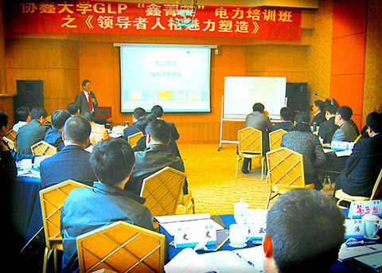

管理也有质量问题
张九元老师
来源：中华龙集团教育培训中心 点击:190次
职业生涯：
38年的职业生涯是这样度过的：6年政府公务员，8年大型国企中层管理者，4年小型国企法人代表，3年高校理论研究者，17年咨询公司顾问。
原创课程文章
在人类进入21世纪的今天，以信息技术、知识产业为主要标志的知识经济革命给当今社会的经济发展、社会生活、价值观念、领导方式和管理模式带来了哪些深刻的影响和巨大的挑战？与农业经济、工业经济相比，知识经济在管理体制上又有什么区别？
谈起“管理”，我们绝不可“数典忘祖”。我们的祖先曾经在管理领域纵横数千年。在生活、生产、行军、打仗等诸多人类实践活动中总结提炼出许多宝贵的管理与思想，为创造人类的文明做出了巨大的贡献。然而事物是发展的，到近现代，在管理方面，无论是理论上，还是实际中，我们都远远落后于西方。在比较中西方管理理论之间的差异与分歧的同时，我们发现，东西方对管理理解存在一个共同的结合点，即都强调“人”在其中的作用。
的确，人的作用太重要了。在中国，国企因管理不善而大面积亏损；有的政府部门效率低下，腐败迭出……这些问题都需要一大批“人”，一大批具有改革精神、管理素质的“现代型领导”来解决。
大多数人相信，对于所有成功的领导者来说，都具备一系列一致而独特的个性特点，不论他们从事何种工作。研究者发现，领导者有六项特质不同于非领导者，即进取心、领导愿望、正直与诚实、自信、智慧和工作相关知识。然而，具备恰当的特质只会使个体更有可能成为有效的领导人，但他还需要采取正确的行动。而且，在一种情景下正确的行动放在另一种情景下未必正确。这就需要我们的领导者去把握管理的奥妙，真正懂得管理这一门学问。
公司的更新运动的本质是：最终，这是一场与个人行为之间的竞争。我们对行为背景因素的描述看起来似乎很详细，图例似乎也很错综复杂，但对飞利浦公司半导体部门改革的这些描写可能会模糊在行为战中获胜的复杂性和挑战性。图例和解释没有能说明的不仅是做了什么的重要性，还是怎么做的重要性。例如，并不是评估程序、季度会议或新的会计制度促使在半导体部门内制定纪律，关键是高层经理使用这些工具和活动的方式。评估程序只是使经理正视他们经营缺口大小的一个工具，还需要一致的管理行动，以便将它从一串数字转变成整个部门共享的达到严格标准的行动规范。类似地，哈格曼斯特用潜在的自我约束代替了强制服从，通过使用新的会计数据将常规经营回顾提升到管理教育研讨会的高度，以强调完成任务的重要性。最终，并不是工具或主动性，而是应用它们时达到的管理质量促使纪律的建立，并成为既定的行为规范。
同样，其他所述的行为背景因素也是如此。例如，信任是一个只能慢慢地、小心地、花费大量时间和精力来建立的组织特征。在此再一次重申，管理不能脱离交流。
现在宣称员工是公司竞争优势的主要源泉已是陈词滥调。但是，从字面上理解，长期来看并不正确，至少从奴隶制被废除以来是不正确的。能使人直接作为竞争优势源泉的惟一途径是他们是否被剥削——在监狱工厂或血汗工厂。在一个根据员工的个人能力支付相应报酬的公司里，竞争优势的真正源泉存在于他们的管理背景，即企业内部环境允许员工独自或集体创造出比他们受雇于别处更多的价值。如经常宣传的一样，如果管理的关键作用是帮助一般人创造出非凡的结果，或者，一个公司可以通过改变内部行为背景而显著地改变人们的行为，那么塑造这样的背景无可辩驳地是经理们的主要任务，也是公司优质管理的最好的措施。
当和经理们谈及个性化公司时，最具有可能性的一个问题会是：“你需要建立什么样的组织结构？”那些认为结构的调整会形成一种新的战略能力的经理们的自然反应是：建立产品事业部使经营尽可能多样化，建立国际部促使海外扩张，并且创立一种所谓的战略经营单位以便更有效地控制产品和市场。令人感兴趣的是，尽管在我们调查的公司样本当中，在很多方面有共同之处，如基层企业家的创造力、部门间相互学习、不断地自我更新，甚至构筑行为背景去发展这些能力，但是没有一个普遍的结构模式看起来能够引起或延续这些变化，以形成个性化公司。事实上，很多公司得以建立一种企业家不断自我更新学习的组织结构似乎不在于其结构，反倒是因为完全与结构相脱离。
管理不仅仅在于管不管，如何管，还在于管理的方法是否符合实际，管理的质量高不高，最终的效益好不好。